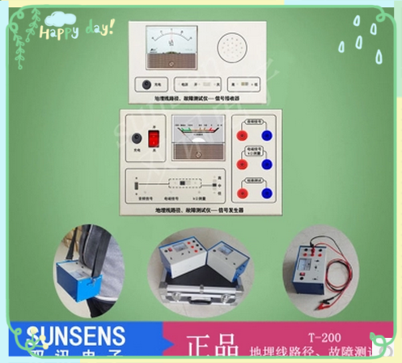
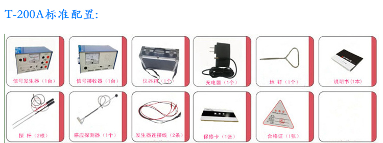
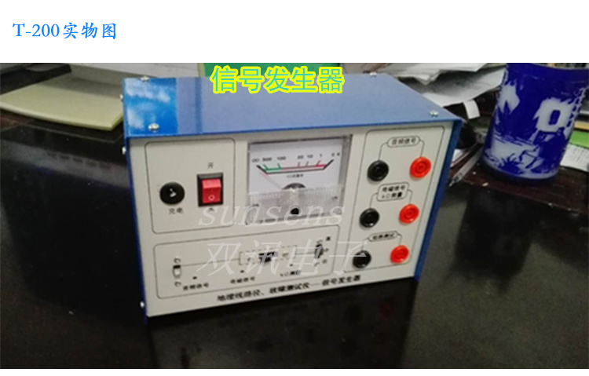
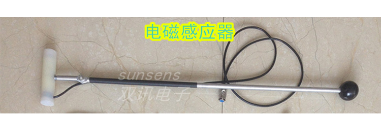
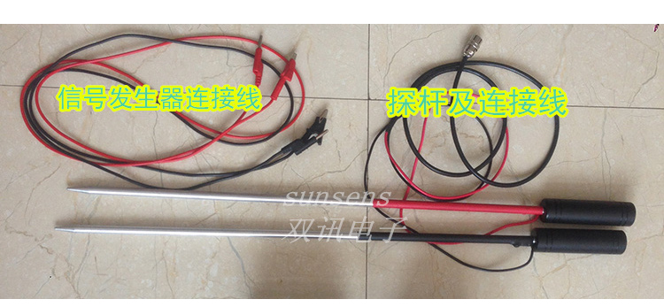
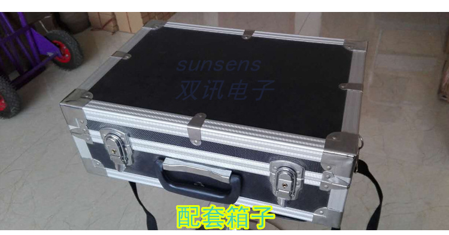
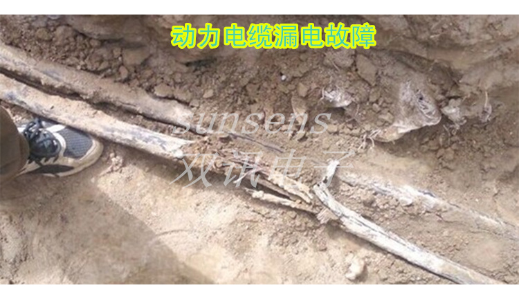
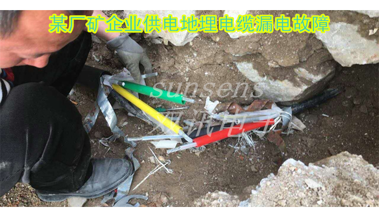

T-200电缆故障测试仪墙内电缆路灯电缆漏电检测地埋路径断线测试
售价：1600.00元
编号：T-200
品牌：双讯
颜色：颜色分类: T-200A T-200B
供应商：江西南丰振宇集团
商品详情
声、表同步探测地埋线路路径，方向指示强，准确率高；
自带KΩ电阻测量表，便于筛选故障线路；
抗干扰性强，不受同向电缆、高压线及广播信号的干扰影响；
充电锂电池，智能充电，无需值守；
T-200地埋线路径、故障测试仪：针对地埋线缆走向测试准确，误差不超过20cm
T-200地埋线路径、故障测试仪铠装及普通地埋电缆低阻对地漏电故障(漏电阻值在500K欧姆内)均能测试。
      